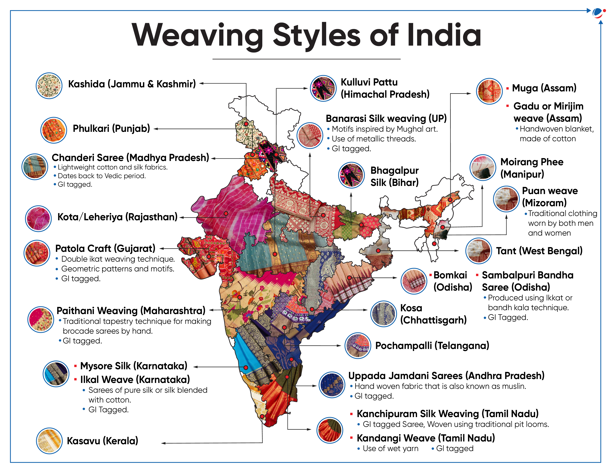

India's diverse sarees include the luxurious Kanchipuram silk from Tamil Nadu, the elegant Banarasi silk from Uttar Pradesh, the graceful Kasavu from Kerala, and the majestic Paithani from Maharashtra. Each saree reflects centuries of weaving heritage, regional culture, and craftsmanship.

Luxurious silk sarees with Mughal-inspired gold and silver zari work.
Pure mulberry silk sarees with temple borders and vibrant colors.
Elegant white sarees with golden borders worn during festivals.
Handwoven silk sarees featuring peacock and lotus motifs.
Royal silk sarees known for their rich texture and simplicity.
Double ikat sarees with intricate geometric designs.
Lightweight silk-cotton sarees with sheer elegance.
Vibrant tie-dye sarees with diagonal wave patterns.